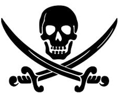
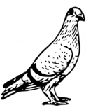

— more work from the curious mind of jannaee sick —
How I plan to survive the
ZOMBIE
APOCALYPSE
in three simple techniques

Shelter
- It's time to draw inspiration from the Somali pirates. The key for great shelter is out in the ocean and all you have to do is hijack a boat or two. Look for the ones that have been abandoned by people or overrun by zombies. Zombies can be easily tricked to walk off the plank.
-

Food
- Beggars can't be choosers. Go for weak, small prey. Pigeons are slow and plentiful, they provide fat and taste like chicken—er um, so I believe that's what it would taste like. As for veggies? while on land scoope up clovers. They are a highly edible and great source of potassium which can help with the runs.
Weapons
- You should always have three types of weapons. Something for long distance like a knife. Another type of weapon should be used for mid-range and hunting, like a machette. However, the most important skill will be what you know for short range combat ie, fist fighting—thats why I learned Krav Maga.